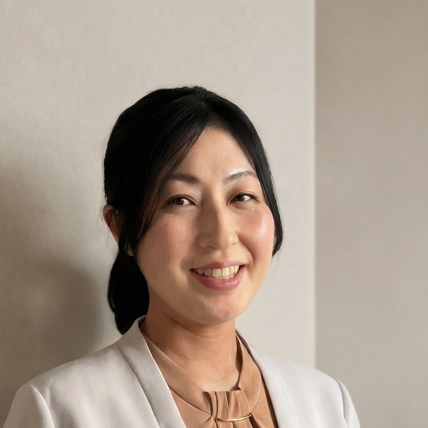

一目置かれる上司がやっている、
やる気に頼らない伝え方
それは、部下のやる気の問題でも、
あなたの力不足でもないんです。
見るところを少し変えるだけで、
部下の動き方は変わるんです。
最後に少しだけ、1月から始まる講座のご案内をします。
無理なおすすめはしませんので、安心してご参加ください。
| 日時 | 2026年12月16日（水）21:00〜22:00 |
|---|---|
| 場所 | Zoom（オンライン） |
| 参加費 | 無料 |
| 参加のしかた | 顔出しは自由です。チャットでの参加もOK。 質問は、勉強会の時間内にお答えします（録画します） |
| 定員 | 5名（少人数で、質問もしやすい形にしています） |
| 対象 | 職場で部下・後輩を育てる立場の方 |

人材育成専門の公認心理師。20歳から15年以上、療育と特別支援教育に関わる。大学院で応用行動分析学を研究。行動分析学×エニアグラムで、職場で人を育てる立場の方に向けた研修・講座・個別セッションを行っている。青森・八戸在住、三児の母。
ボタンを押すと、その場でお申し込み完了です。
・メールは info@satsuki-lab.com から届きます
・ZoomのURLは、前日と当日にメールでお送りします
・お申し込みの方には、毎週水曜のメルマガもお届けします（いつでも停止できます）